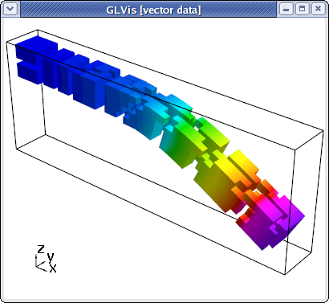

Parallel Tutorial
Summary
This tutorial illustrates the building and sample use of the following MFEM parallel example codes:
An interactive documentation of all example codes is available here.
Building
Follow the building instructions to build the parallel MFEM library and to start a GLVis server. The latter is the recommended visualization software for MFEM (though its use is optional).
To build the parallel example codes, type make in MFEM's examples directory:
~/mfem/examples> make
mpicxx -O3 -I.. -I../../hypre/src/hypre/include ex1p.cpp -o ex1p ...
mpicxx -O3 -I.. -I../../hypre/src/hypre/include ex2p.cpp -o ex2p ...
mpicxx -O3 -I.. -I../../hypre/src/hypre/include ex3p.cpp -o ex3p ...
mpicxx -O3 -I.. -I../../hypre/src/hypre/include ex4p.cpp -o ex4p ...
mpicxx -O3 -I.. -I../../hypre/src/hypre/include ex5p.cpp -o ex5p ...
mpicxx -O3 -I.. -I../../hypre/src/hypre/include ex7p.cpp -o ex7p ...
mpicxx -O3 -I.. -I../../hypre/src/hypre/include ex8p.cpp -o ex8p ...
mpicxx -O3 -I.. -I../../hypre/src/hypre/include ex9p.cpp -o ex9p ...
mpicxx -O3 -I.. -I../../hypre/src/hypre/include ex10p.cpp -o ex10p ...
Example 1p
This is a parallel version of Example 1 using hypre's BoomerAMG preconditioner. Run this example as follows:
~/mfem/examples> mpirun -np 16 ex1p -m ../data/square-disc.mesh
...
PCG Iterations = 26
Final PCG Relative Residual Norm = 4.30922e-13
If a GLVis server is running, the computed finite element solution combined from all processors, will appear in an interactive window:
You can examine the solution using the mouse and the GLVis command keystrokes.
To view the parallel partitioning, for example, press the following keys in the GLVis window: "RAjlmm" followed by F11/F12 and zooming with the right mouse button.
To examine the solution only in one, or a few parallel subdomains, one can use the F9/F10 and the F8 keys. In 2D, one can also use press "b" to draw the only the boundaries between the subdomains. For example
was produced by
glvis -np 16 -m mesh -g sol -k "RAjlb"
followed by F9 and scaling/position adjustment with the mouse.
Three-dimensional and curvilinear meshes are also supported in parallel:
~/mfem/examples> mpirun -np 16 ex1p -m ../data/escher-p3.mesh
...
PCG Iterations = 24
Final PCG Relative Residual Norm = 3.59964e-13
~/mfem/examples> glvis -np 16 -m mesh -g sol -k "Aooogtt"
The continuity of the solution across the inter-processor interfaces can be seen by using a cutting plane (keys "AoooiMMtmm" followed by "z" and "Y" adjustments):
Example 2p
This is a parallel version of Example 2 using the systems version of hypre's BoomerAMG preconditioner, which can be run analogous to the serial case:
~/mfem/examples> mpirun -np 16 ex2p -m ../data/beam-hex.mesh -o 1
...
PCG Iterations = 39
Final PCG Relative Residual Norm = 2.91528e-09
To view the parallel partitioning with the magnitude of the computed displacement field, type "Atttaa" in the GLVis window followed by subdomain shrinking with F11 and scaling adjustments with the mouse:

Example 3p
This is a parallel version of Example 3 using hypre's AMS preconditioner. Its use is analogous to the serial case:
/mfem/examples> mpirun -np 16 ex3p -m ../data/fichera-q3.mesh
...
PCG Iterations = 17
Final PCG Relative Residual Norm = 7.61595e-13
|| E_h - E ||_{L^2} = 0.0821685
Note that AMS leads to much fewer iterations than the Gauss-Seidel preconditioner used in the serial code. The parallel subdomain partitioning can be seen with "ooogt" and F11/F12:
One can also visualize individual components of the Nedelec solution and remove the elements in a cutting plane to see the surfaces corresponding to inter-processor boundaries:
glvis -np 16 -m mesh -g sol -k "ooottmiEF"